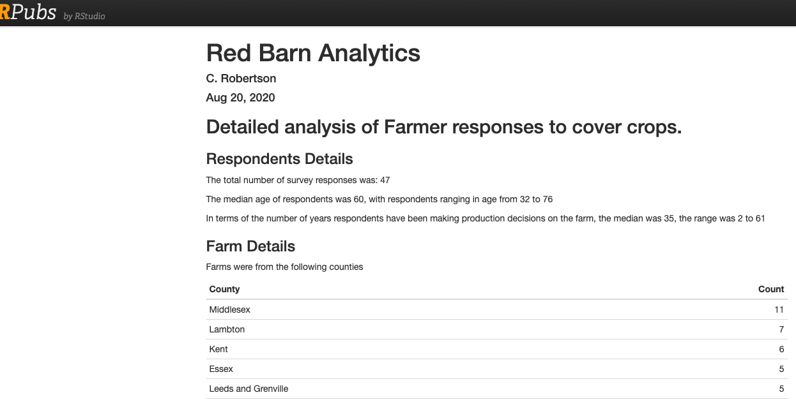

2 Data/Analytic Visualization
2.1 SKM Introduction
2.1.1 Readings this week
2.2 Tabular Data
2.2.1 Readings this week
HNP-3 Individual geoms HNP-4 Collective geoms HNP-5 Statistical summaries ggplot2 Cheat Sheet
2.2.2 Case study
Surveying farmers about agricultural practices. This project was in consultation with an environmental agriculture association aiming to understand barriers to the adoption of specific farming practices, specifically the use of cover crops.

The survey asked farmers about their use of cover crops and any barriers they experienced in applying this practice to their farms. We will walk-through a detailed analysis of this farmer survey data, which is primarily tabular data with some spatial and temporal components.
First, let’s look at the raw data.

Some things you need to check when inspecting a new dataset, include at least the following:
are the column names well-formed?
what columns have NULL values, will this cause an issue, how are NULL values coded, is it consistent?
do any columns have a mix of data types? (e.g., see column
AH)are there data that should anonymized?
are there gaps above or below the data, or ad hoc summaries that need to be removed?
are there any obviously erroneous values (i.e., not valid outliers but errors, such as a value of
491in theagecolumn) that need to be removed?
As well as some deeper questions:
do you understand what each column and value means, what each row represents? If there are some you do not understand consider whether the columns you do understand are sufficient to answer the key questions you’re exploring with this dataset?
are the data stored in the correct data type (especially important if viewing data in Microsoft Excel)?
are the data complete? (i.e., are all the expected rows there, does the
rowcount= the sample size)?
Secondly, let’s examine the end product we created to explore this data. The graphs here were used in a report summarizing key trends.

2.3 Time Series Data
2.3.1 Readings this week
2.4 Spatial Data
2.4.1 Readings this week
2.4.2 Case Study
Here we will walk through a spatial visualization analysis from start to finish and make some key decisions about how we want to visualize the data. The data we are going to start with is from crime statistics in the City of Toronto. We can find the materials for this walk-through here.
2.5 Model Data
Statisical modelling is a core construct in R due to its roots as a statistical programming language. Base R has powerful modelling features such as lm and glm for fitting models to data. As well, there are hundreds (thousands?) of additional packages that implement almost any conceivable statistical model, from time series to spatial point process models to survival models. This week we will review some basic ideas of randomness and modelling and then explore how to visualize and interrogate models using tidyverse friendly packages and tools.